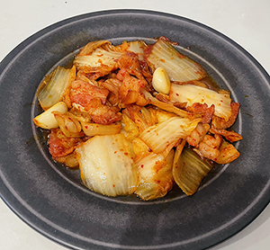
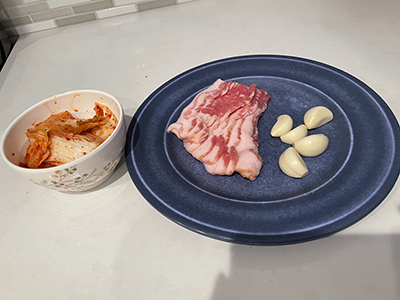
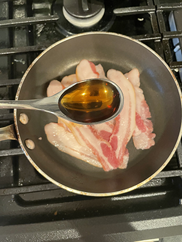
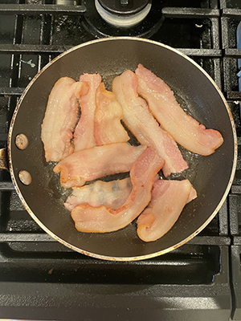
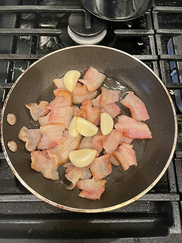
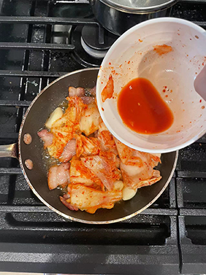
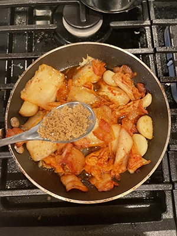
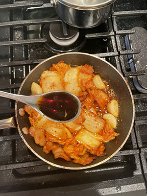

Kimchi Fried Pork

Kimchi Fried Pork is a traditional Korean food.
The taste is sour and spicy, mainly made of pork, Kimchi, sugar, garlic and cooking wine.
Ingredients
- 250g Pork+ 200g Kimchi+ 5cloves garlic

- 1tablespoon sugar+ 2tablespoon cooking wine+ 1tablespoon soy sauce
Cooking Steps
- Put the pork in a pan without oil, then add 2tablespoon cooking wine.

- Fry on medium heat until golden on both sides.

- Add garlic after frying out the oil and fat.

- Add Kimchi.

- Add 1tablespoon sugar.

- Add 1tablespoon soy sauce.

- Finish.